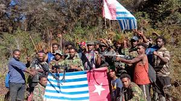
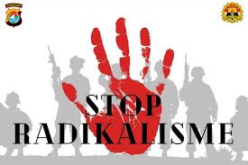

Faktor-faktor internal yang berpotensi menggoyahkan persatuan dan kesatuan bangsa, serta keutuhan wilayah NKRI.
Disusun oleh Kelompok 3 - Kelas XI RPL3
Eskalasi kekerasan yang melibatkan Tentara Pembebasan Nasional Papua Barat-Organisasi Papua Merdeka (TPNPB-OPM) terus menjadi ancaman serius.
Istilah yang sering digunakan pemerintah untuk merujuk pada kelompok pro-kemerdekaan bersenjata di Papua. Aksi KKB dinilai sebagai ancaman langsung terhadap kedaulatan negara dan keamanan masyarakat.
Meskipun tren global menunjukkan penurunan, Indonesia masih menghadapi ancaman dari jaringan teroris domestik yang berafiliasi dengan kelompok teror global seperti ISIS dan Jamaah Islamiyah (JI).
Penyebaran ideologi radikal melalui media sosial dan pengajian tertutup masih menjadi tantangan, menyasar berbagai kalangan termasuk generasi muda. (Berkelanjutan 2019-2024)
Sengketa lahan antara masyarakat dengan perusahaan (pertambangan, perkebunan) atau proyek strategis nasional kerap memicu ketegangan dan bentrokan.
Meskipun tidak ada konflik SARA berskala besar, isu SARA rentan dimanfaatkan untuk memecah belah, terutama saat kontestasi politik. Ujaran kebencian dan politik identitas di media sosial menjadi perhatian.
Dipicu insiden rasisme terhadap mahasiswa Papua di Surabaya, demonstrasi besar terjadi di Papua dan kota lain (Agustus-September 2019), sebagian berujung kerusuhan. Ini menunjukkan sensitivitas isu rasisme.
Korupsi masif, terutama yang melibatkan pejabat negara dan sumber daya alam, secara tidak langsung mengancam keutuhan NKRI dengan:
Munculnya dan upaya penyebaran ideologi yang bertentangan dengan Pancasila (seperti khilafah atau komunisme gaya baru) dianggap sebagai ancaman terhadap dasar negara dan keutuhan NKRI.
Semoga presentasi ini bermanfaat dan menambah wawasan kita semua.